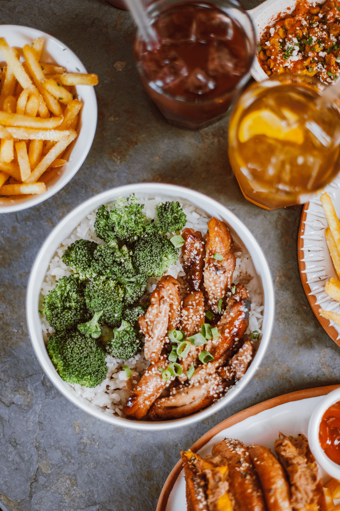
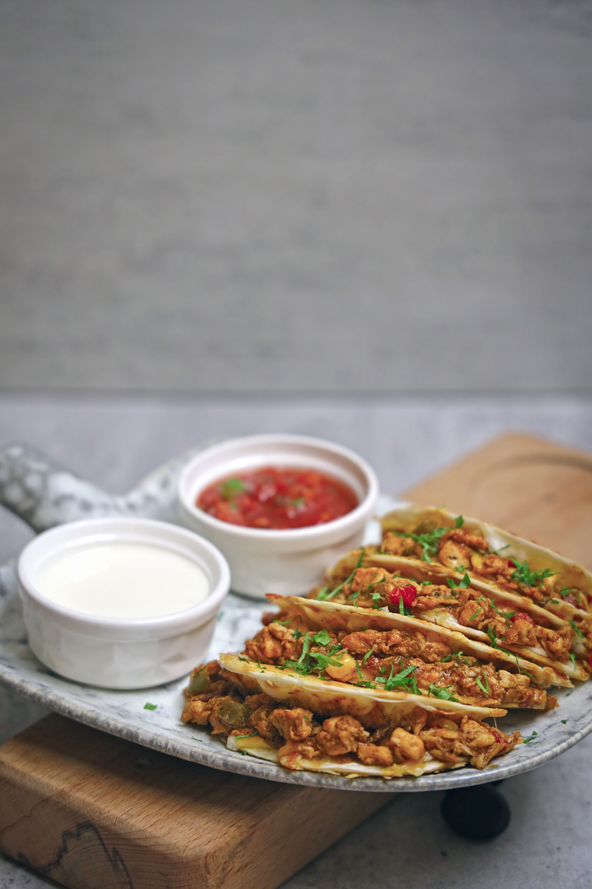
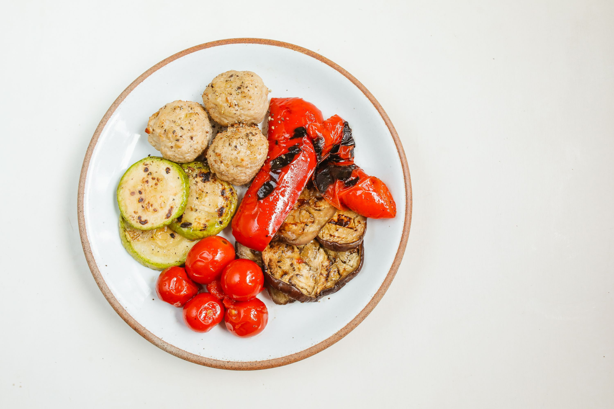

Dinner Meal Prep
Preparing dinner ahead of time can make busy evenings easier and save time during the week. These simple dinner ideas can be prepared ahead of time so you have a filling meal ready when you need it.
Easy Dinner Ideas
Teriyaki Chicken Rice Bowl
This teriyaki chicken rice bowl is an easy and healthy dinner that can be prepared ahead of time for busy nights.
Ingredients:
- 1 chicken breast
- 1 cup cooked rice
- 1/2 cup broccoli
- 1/2 cup sliced carrots
- 2 tablespoons teriyaki sauce
Directions:
- Cut the chicken into bite-sized pieces.
- Cook the chicken in a pan until fully cooked.
- Steam the broccoli and carrots until tender.
- Cook the rice according to the package directions.
- Add the teriyaki sauce to the chicken and stir.
- Divide the rice, chicken, and vegetables into a meal prep container.
- Refrigerate until ready to eat.

Easy Chicken Tacos
These chicken tacos are a quick and healthy dinner that is easy to prepare ahead of time and customize with your favorite toppings.
Ingredients:
- 1 chicken breast
- 2–3 small tortillas
- 1/2 cup shredded lettuce
- 1/4 cup diced tomatoes
- 1/4 cup shredded cheese
- Salsa
- Taco seasoning
Directions:
- Season the chicken with taco seasoning.
- Cook the chicken until fully cooked.
- Cut or shred the chicken into small pieces.
- Wash and prepare the lettuce and tomatoes.
- Store the chicken and toppings separately from the tortillas.
- Heat the tortillas and chicken when ready to eat.
- Add the toppings and salsa before serving.

Turkey Meatballs & Roasted Veggies
These turkey meatballs with roasted vegetables are a simple and filling dinner that is easy to portion and prepare ahead of time.
Ingredients:
- 5–6 turkey meatballs
- 1 cup baby potatoes
- 1/2 cup broccoli
- 1/2 cup sliced bell peppers
- 1 tablespoon olive oil
- Salt and pepper to taste
Directions:
- Preheat the oven to 400°F.
- Cut the potatoes and vegetables into bite-sized pieces.
- Toss the potatoes and vegetables with olive oil, salt, and pepper.
- Place the vegetables and turkey meatballs on a baking sheet.
- Bake until the vegetables are tender and the meatballs are fully cooked.
- Divide into meal prep containers and refrigerate until ready to eat.
